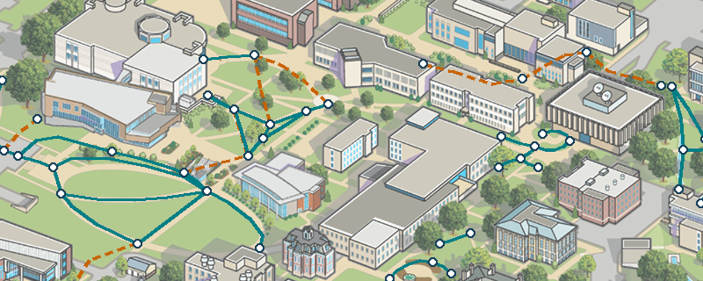

Loading local reference snapshots…
Review only. These panels are not automatically aligned. Geographic distances come from OSM coordinates, never illustration pixels. No nearest-path links are automatically accepted.

This retains our artwork geometry. A geographic edge will receive an illustrated trace ID only after a reviewed correspondence. Building centers are not entrance or sidewalk control points.
Open full illustrated reviewChoose an entrance to inspect nearby OSM geometry. A 30 m candidate may be across a wall, street, fence, stairs, or a different level.
S&T source filename: 240516-CampusWayfinder.kml. Its ADA labels are source claims, not our accessibility validation. The six detour lines may be obsolete. OSM can omit paths, closures, barriers and access restrictions. Shared OSM node IDs form topology; geographic crossings are not automatically joined.
Source manifest · Import summary · Official wayfinding source